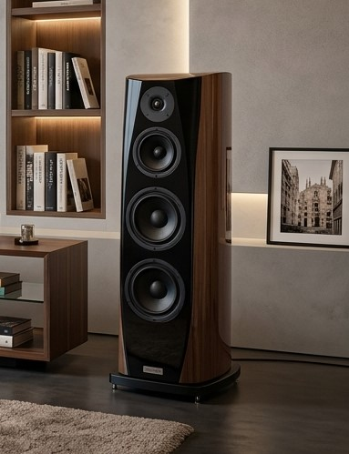

← Torna ai prodotti
Model Two
Torre da pavimento a tre vie. Bass reflex, medio dedicato, basso profondo.

Caratteristiche tecniche
- Configurazione: 3 vie
- Woofer: 2 x 6.5"
- Midrange: 4"
- Tweeter: cupola in tessuto
- Cabinet: MDF e legno
- Finitura: Laccato opaco
Prezzo
Su richiesta.
Richiedi informazioni